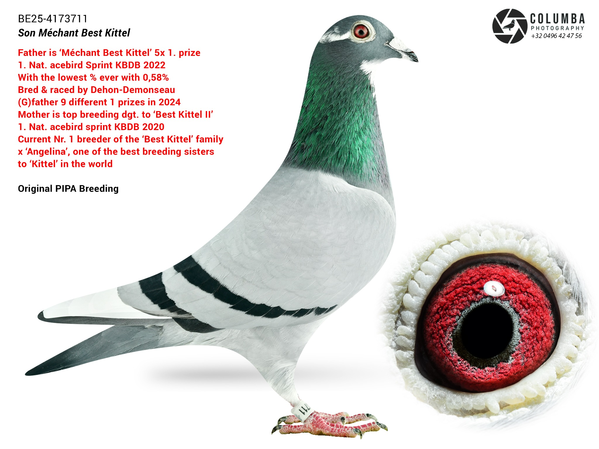
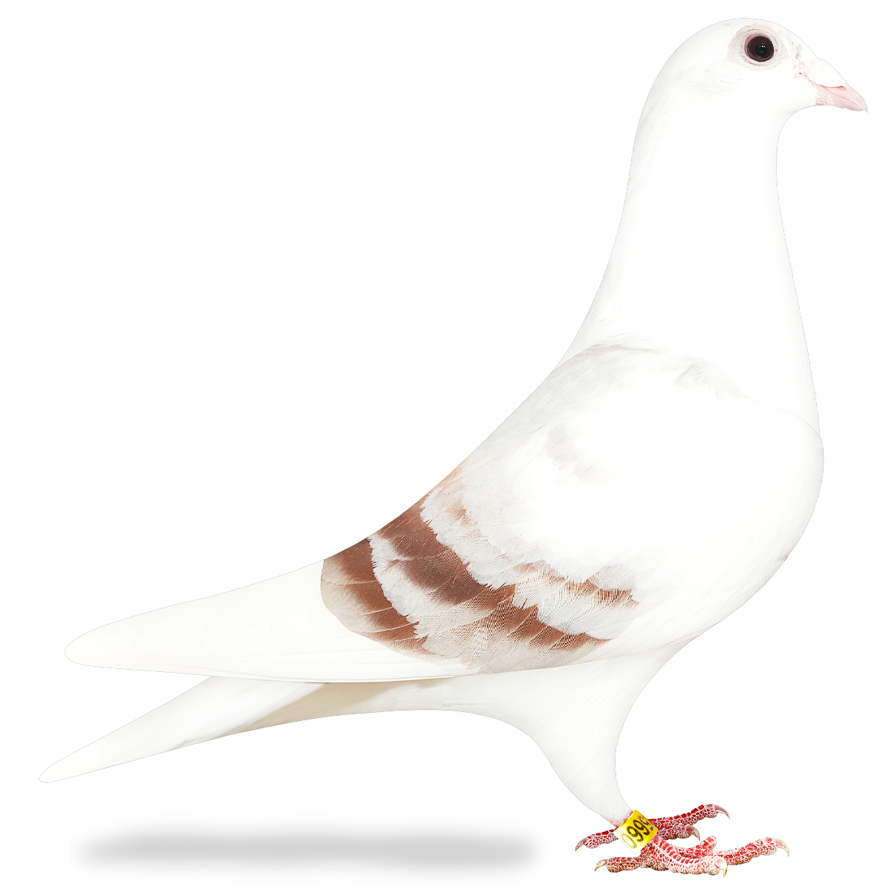
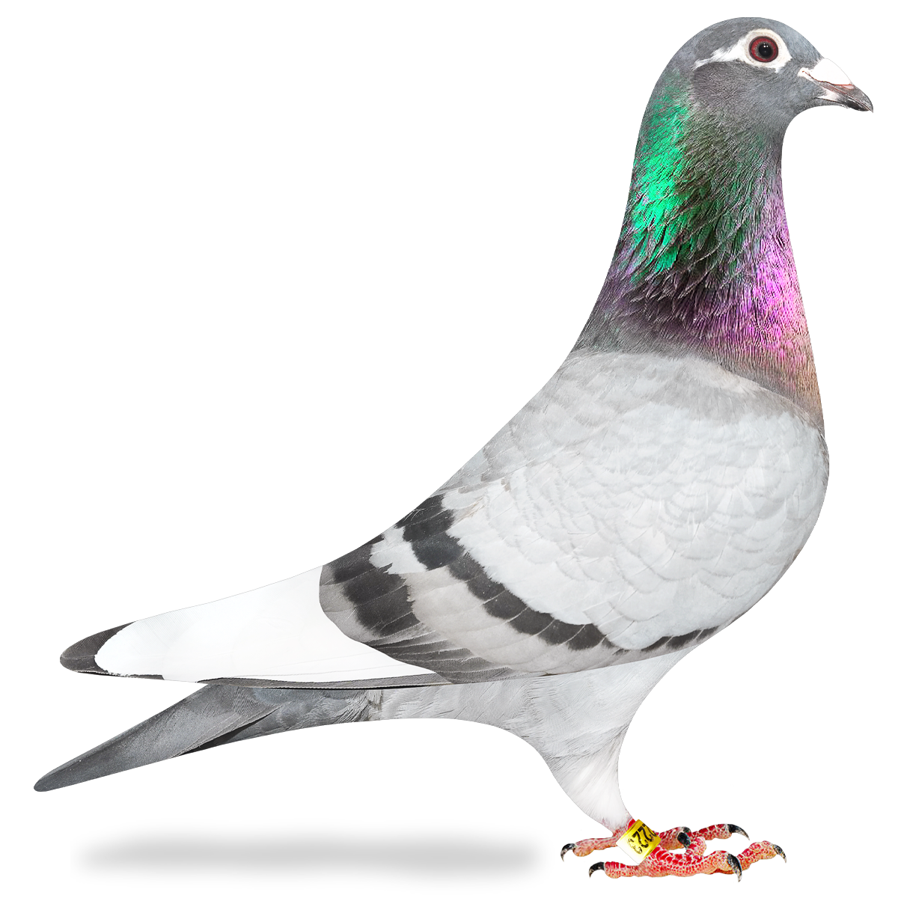
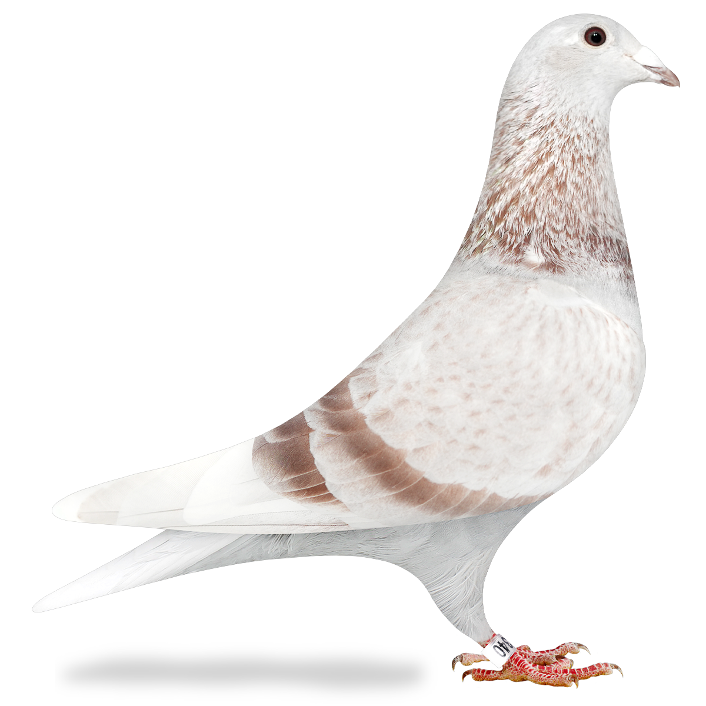
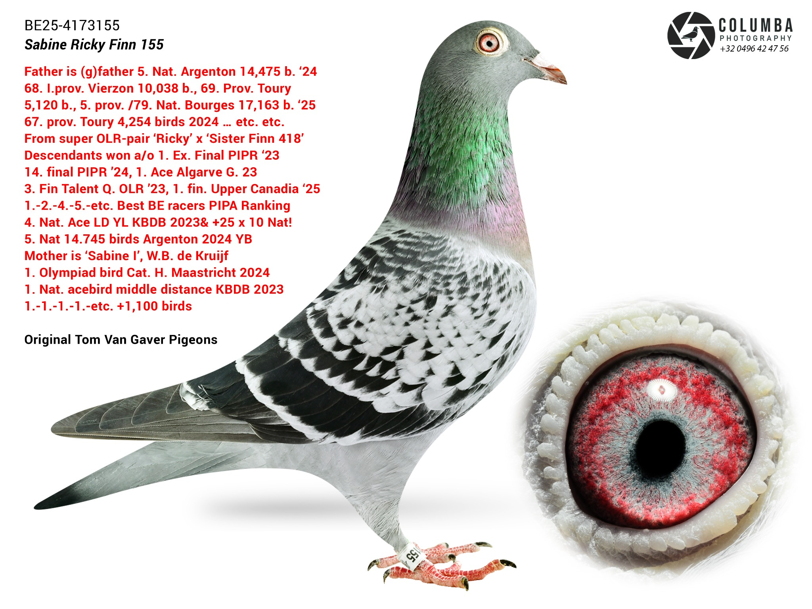
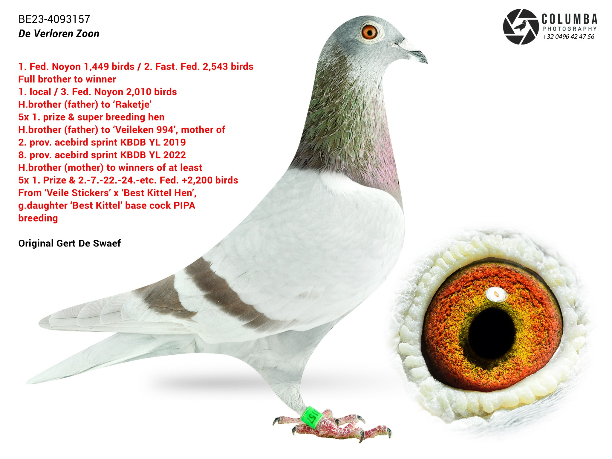
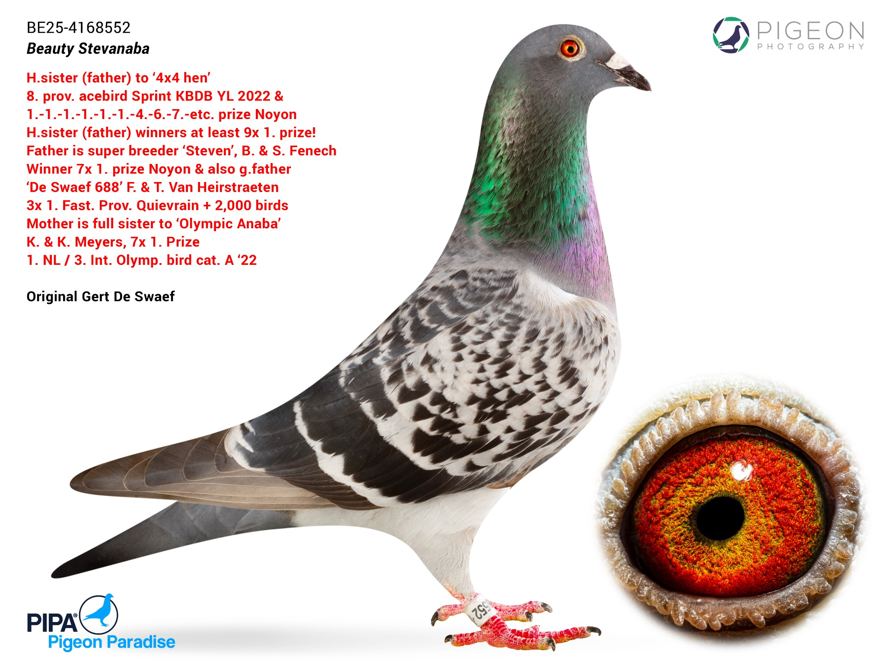
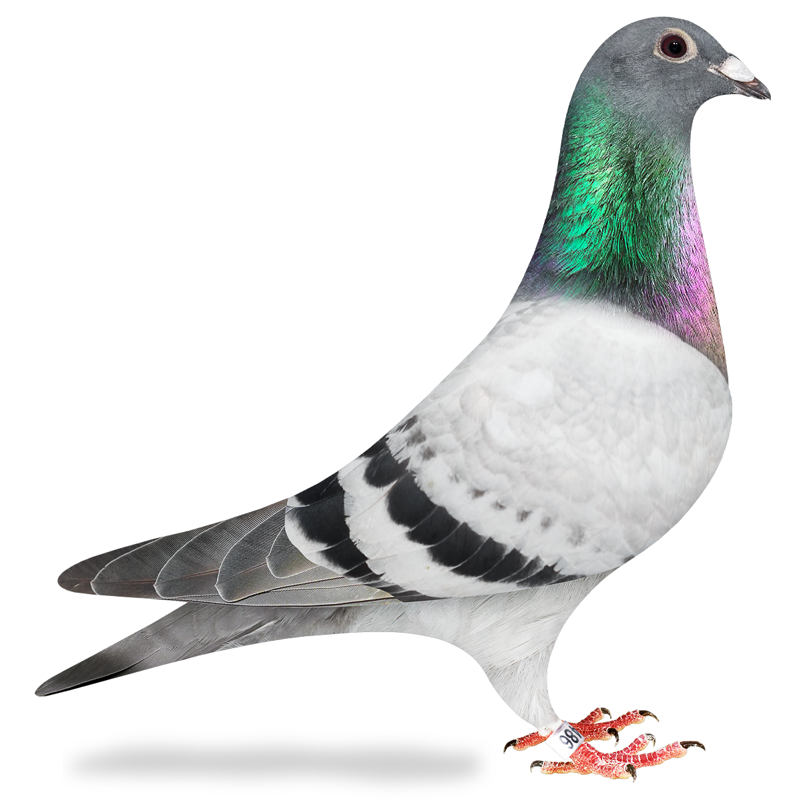
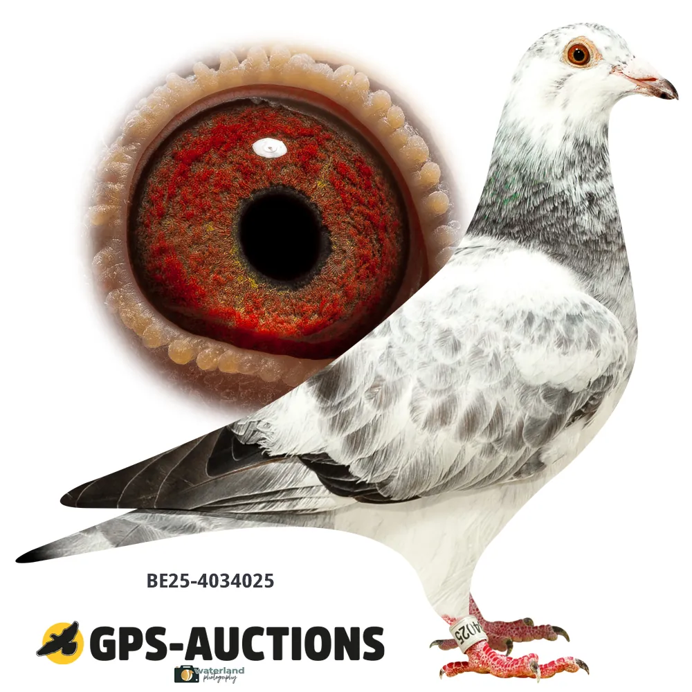
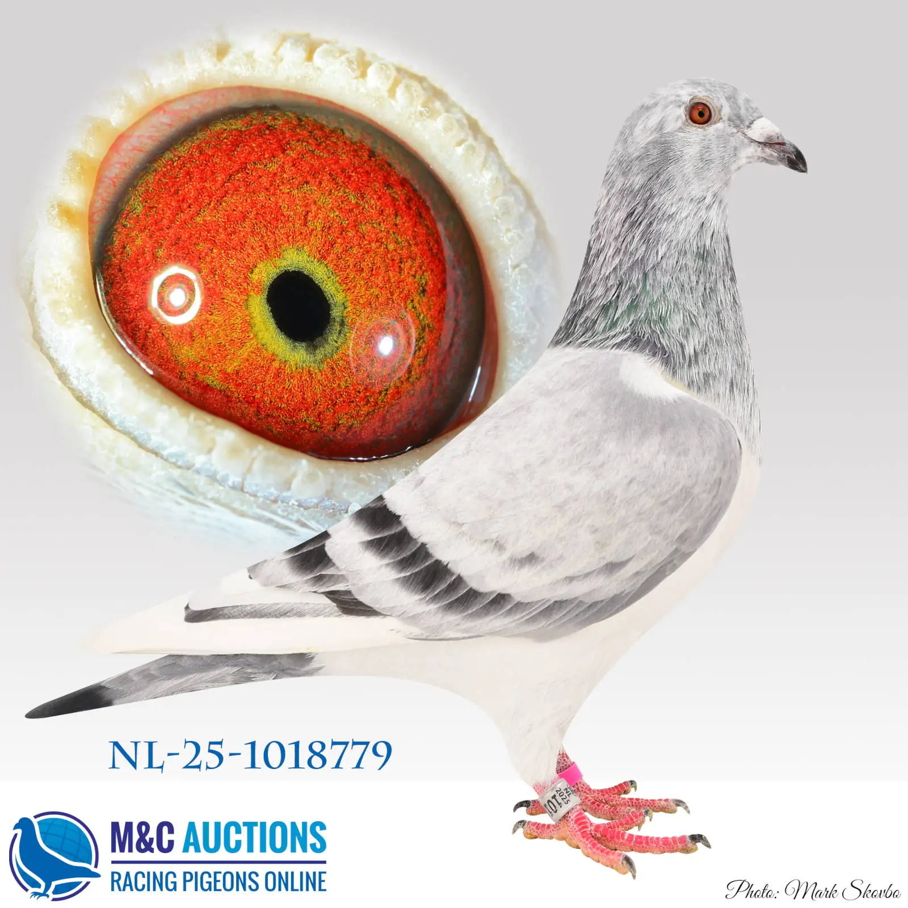

PIPA Breeding
Méchant
BE25-4173711 · Doffer
Rechtstreeks PIPA Breeding. Méchant is een zoon van Méchant Best Kittel, 1e Nat Asduif Sprint KBDB 2022.
Kweekdatabank
De kweekbasis van RVH Pigeons is opgebouwd rond zorgvuldig geselecteerde nationale en internationale topbloedlijnen. Iedere duif werd gekozen op basis van bewezen genetische kwaliteit, afstamming en toekomstig kweekpotentieel.

BE25-4173711 · Doffer
Rechtstreeks PIPA Breeding. Méchant is een zoon van Méchant Best Kittel, 1e Nat Asduif Sprint KBDB 2022.

GB24-D85660 · Duivin
The One & Only verenigt Best Kittel II, Angelina, Blizzard King Kittel en het stamkoppel van Pierre Beyl.

NL24-8630062 · Doffer
Golden Angel 062 combineert Blue Best Kittel, Gold Dust, Méchant Best Kittel en Angelina.

GB24-X22223 · Duivin
Blizzard Whizz is inteelt en kleindochter Blizzard King Kittel, 1e Nat Asduif Sprint KBDB 2021.

GB25-X14340 · Duivin
Dancing Dream is een duivin die het stamkoppel van Pierre Beyl combineert met de King Arthur-lijn van Dirk VD Bulck.

BE25-4173155 · Duivin
Rechtstreeks Tom Van Gaver. Dochter Sabine 1° Olymp Asduif Cat. H 2023, Kleinkind Ricky x Sis Finn 418.

BE23-4093157 · Doffer
Rechtstreeks Gert De Swaef. Verenigt Stickers-Donckers, en Best Kittel met Leo Heremans-invloed.

BE25-4168552 · Duivin
Beauty Stevanaba combineert Gert De Swaef-kwaliteit met Olympic Anaba-invloeden.

NL21-1509878 · Duivin
Rechtstreeks Gebr. Leideman. Aodo is kleinkind van Goed grijs, Arturo x Tila en Young Beste 787.

GB25-D54486 · Doffer
Kleinzoon Blizzard King Kittel en Phantom Blizzard. 1e Nat Asduif Sprint KBDB 2021 en 2024.

BE25-4034025 · Doffer
Baloe is een jonge kweekduiver afkomstig van Eddy Den Haese en opgebouwd rond moderne Leideman- en Eijerkamp-lijnen.

NL25-1018779 · Doffer
Hendrik is een dubbel kleinkind van Blizzard King Kittel. Blizzard King Kittel is 1° Nat Asduif Sprint KBDB 2021.